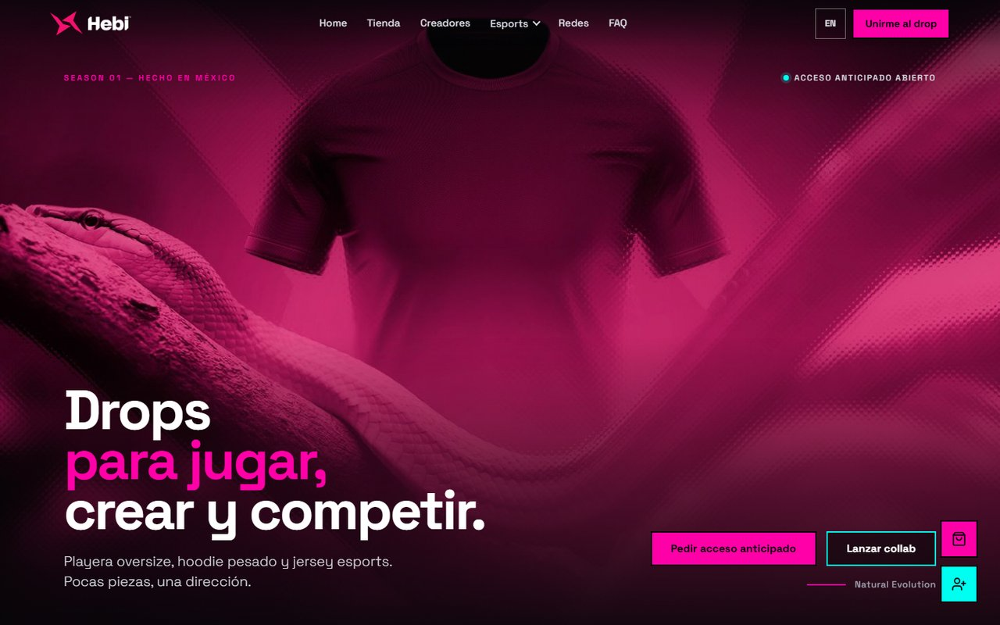
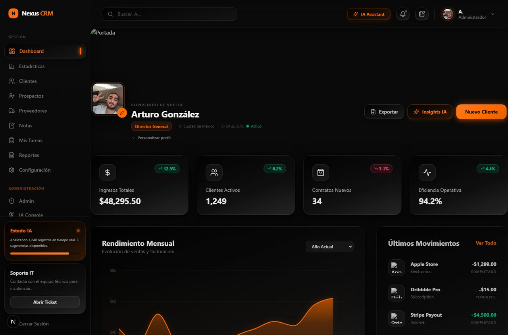
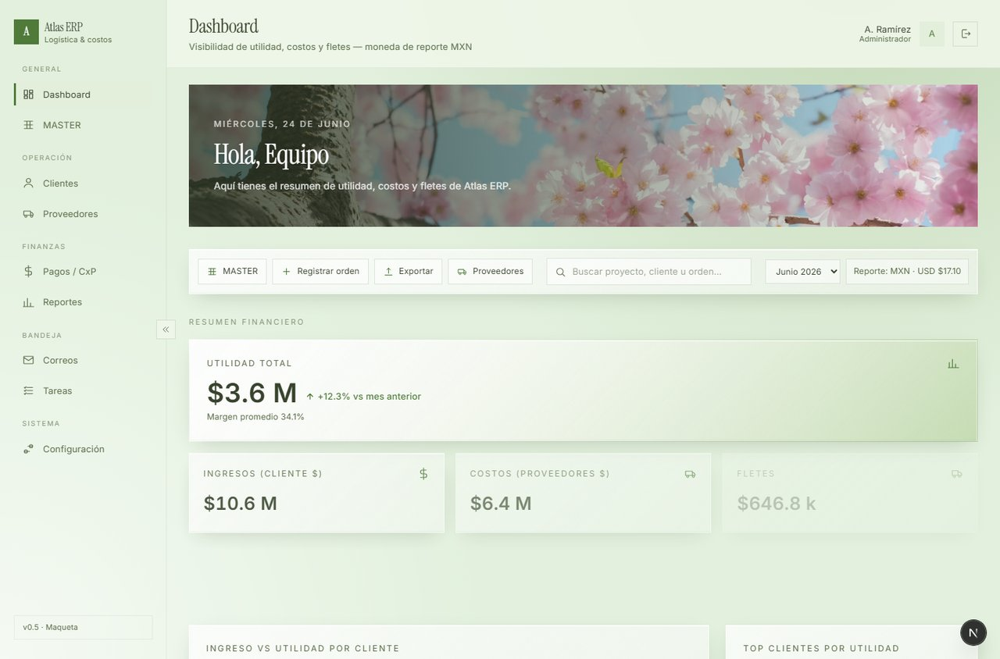
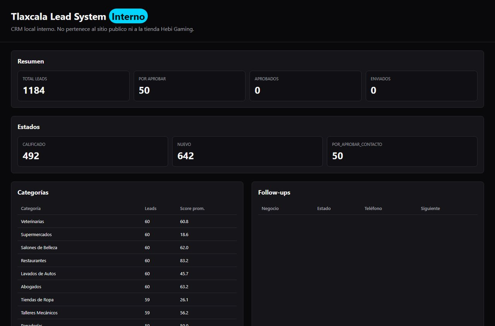
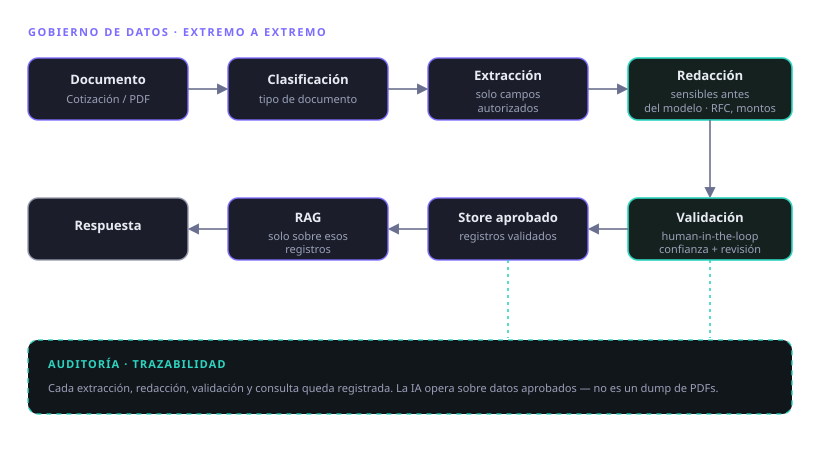

IA como arquitectura
Gateway desacoplado y multi-proveedor; la IA nunca es punto único de falla (fallback a flujo sin IA).
En el último año construí un CRM con IA nativa, un ERP sectorial con router de IA costo-eficiente, un sistema de leads con agentes y una plataforma de e-commerce en producción. IA como arquitectura —multi-proveedor, segura y con costos medidos— no como feature pegado.
Combino visión de negocio —dónde la IA genera ROI real— con ejecución técnica: LLMs, agentes, RAG, gateways, RBAC y despliegue a producción.
Soy desarrollador full-stack y diseñador de producto. En el último año diseñé y construí aplicaciones de IA con un patrón recurrente que importa en producción: la IA como arquitectura, no como feature pegado.
Eso significa gateways desacoplados y multi-proveedor (sin lock-in), routing de modelos por costo, human-in-the-loop, gobierno de datos y defensa contra inyección de prompts. IA pensada para operar, costar poco y no filtrar datos.
Gateway desacoplado y multi-proveedor; la IA nunca es punto único de falla (fallback a flujo sin IA).
Routing entre Claude y Gemini por tarea, rol y costo.
Threat modeling: los datos son contenido, no instrucciones. Anti-inyección y anti-escalación de rol.
Routing por tier, rate limiting y cost tracking por solicitud. Costo bajo a escala.
Extracción de campos autorizados, redacción de sensibles y auditoría — no un dump de PDFs.
Sistemas multi-agente orquestados y automatización end-to-end.
El asistente conoce los permisos del usuario; respuestas restringidas por rol.
Pagos, webhooks, SMTP, SSL y deploy. Lo aburrido-pero-crítico, entregado.
Sistemas de diseño, accesibilidad e internacionalización hasta 4 idiomas.
Estado real indicado en cada tarjeta —en producción, MVP demostrable o arquitectura—. Las apps de cliente se muestran con la interfaz anonimizada.

Plataforma de e-commerce a medida para una marca de streetwear, con checkout real y drops por temporada.

CRM multi-tenant con copiloto de IA integrado y un gateway multi-proveedor en el núcleo.
Proyecto de cliente · interfaz y marca anonimizadas.

ERP de cotizaciones → órdenes → costos multimoneda → márgenes y utilidad para un distribuidor industrial.
Proyecto de cliente · interfaz y marca anonimizadas.

Prospección automatizada: encuentra PyMEs sin presencia digital, las califica 0–100 y genera el primer contacto.
--send; costo medido (~$34 USD/corrida).
Extracción segura de cotizaciones con gobierno de datos de extremo a extremo.
Proyecto de cliente · interfaz y marca anonimizadas.
Sitio corporativo B2B en producción (SSL, GA4), 4 idiomas, formulario → CRM + SMTP + Cloudflare Turnstile, y automatización de 17 firmas de correo con PowerShell.
Motor que controla Photoshop por COM para editar PSDs en lote (rosters, marcadores, logos) sin tocar Photoshop manualmente. Automatización de diseño esports.
Empiezo por el problema de negocio y el ROI, no por el modelo.
Gateway desacoplado, multi-proveedor y con fallback.
Threat modeling del LLM, rate limiting, cost tracking y secretos protegidos.
Ingesta → IA → UI → despliegue, en pasos probados.
Decisiones versionadas, analítica, build verde e iteración por sprints.
En CRM, ERP y leads repito el mismo patrón: multi-proveedor / sin lock-in, routing por costo, human-in-the-loop, gobierno de datos y seguridad de prompts. No es IA de demo: es IA pensada para operar, costar poco y no filtrar datos.
Disponible para roles de AI / LLM Application Engineer y proyectos. Tlaxcala, México (remoto o presencial en la zona).